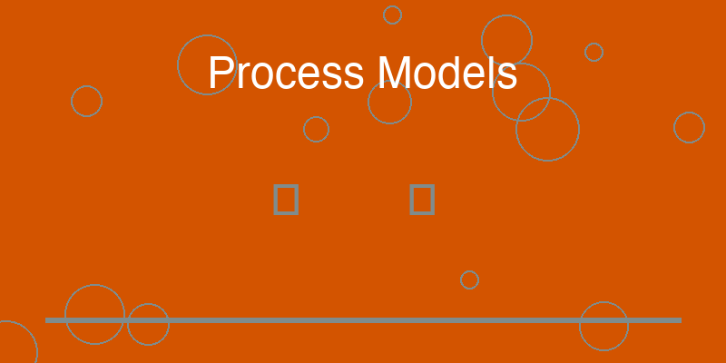

8 Process Models: From if–else to Pipelines

When developers begin writing small programs, the structure of execution is usually straightforward. The program starts at a main entry point, performs a series of operations, and produces a result. The logic unfolds step by step, often guided by conditional statements such as if and else.
For simple scripts, this approach is perfectly adequate. A developer can follow the entire flow of execution easily because the system is small.
However, as software grows, this style of control flow begins to reveal its limitations. When multiple responsibilities accumulate inside a single function or entry point, the logic becomes difficult to extend, test, or reorganize.
The system still works, but its structure begins to resemble a tangled sequence of conditions rather than a coherent process.
Professional systems address this problem by adopting a different perspective: instead of organizing code around branching logic, they organize it around process pipelines.
8.0.1 The Natural Shape of Many Systems
Many real-world software systems follow a similar high-level pattern.
Information enters the system in some form. That information must then be interpreted, checked for validity, stored or processed, and eventually presented to a user or another system.
Although implementations differ, the conceptual flow often resembles a sequence of stages:
input enters the system
the input is parsed into a structured format
the structured data is validated against rules
validated data is stored or processed
results are retrieved through queries
information is presented through an interface
This sequence represents a process model.
Instead of embedding all these steps inside a single function, mature systems recognize them as distinct phases of a pipeline.
Each phase performs a specific transformation, passing the result to the next stage.
8.0.2 The Problem With Accumulated Conditionals
In practice projects, these stages are often implemented implicitly inside a central function. The developer begins with a simple operation and gradually adds more logic as new needs appear.
Over time, the main function grows larger and more complex. Conditional branches multiply. Different concerns become interwoven.
For example, a single block of code might read input, validate it, transform the data, store it, and produce output. Each new feature introduces additional conditions, creating a dense network of branching logic.
While this approach may still function correctly, it obscures the underlying process. The sequence of operations becomes difficult to see, and modifying one stage risks affecting others.
The program has become harder to reason about because its flow is implicit rather than explicit.
8.0.3 Making the Process Explicit
Pipeline-oriented design solves this problem by making the stages of the process explicit.
Instead of placing all logic in one location, the system defines a sequence of transformations. Each stage performs a single task and produces a well-defined output that becomes the input for the next stage.
For example, a request might pass through stages such as:
parsing the incoming data
validating the structure and rules
converting the data into domain objects
persisting those objects to storage
retrieving related information
formatting the result for presentation
Each stage focuses on one responsibility and exposes a clear interface.
This separation allows the overall flow of the system to become visible. A reader can understand the process by observing the sequence of stages rather than tracing every conditional branch.
8.0.4 Extensibility Through Pipelines
One of the most important advantages of pipeline design is extensibility.
When the process is organized as a sequence of independent stages, new behavior can often be introduced by inserting additional steps into the pipeline rather than rewriting existing logic.
For example, a new validation rule might become an additional validation stage. Logging or monitoring can be added without interfering with the core processing logic. Transformation steps can be extended without altering earlier phases.
This modularity allows the system to evolve gradually without destabilizing existing functionality.
Instead of modifying a single monolithic function, developers can extend the pipeline by adding or replacing stages.
8.0.5 Clear Flow Improves Understanding
Pipelines also improve the readability of a system.
When a developer opens the codebase, the sequence of operations becomes immediately visible. The structure communicates how information flows through the system.
This clarity reduces the mental effort required to understand the software. Rather than analyzing nested conditions, the reader observes a straightforward progression of transformations.
The code begins to resemble a process diagram rather than a collection of instructions.
In many ways, this mirrors how humans naturally think about workflows. We describe tasks as sequences of steps rather than as networks of conditional statements.
By aligning code with this mental model, pipeline design makes complex systems easier to understand.
8.0.6 From Functions to Processes
The shift from conditional logic to pipeline design marks another step in the maturation of a project.
A small script often treats the entire operation as a single function. A professional system recognizes that the work being performed is actually a process composed of stages.
By isolating those stages—parsing, validation, transformation, persistence, querying, and presentation—the system gains clarity and flexibility.
The program is no longer a collection of instructions hidden inside a main function. It becomes a structured flow of transformations.
This transformation reflects a broader theme that runs throughout the evolution from practice projects to professional systems: as software matures, its internal structure becomes increasingly visible.
The logic that once existed implicitly inside code is gradually elevated into explicit architecture.